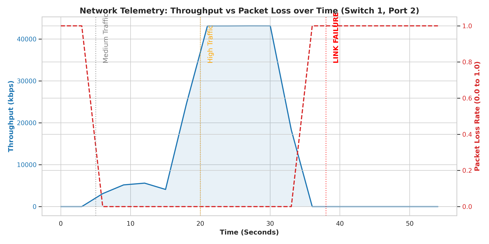
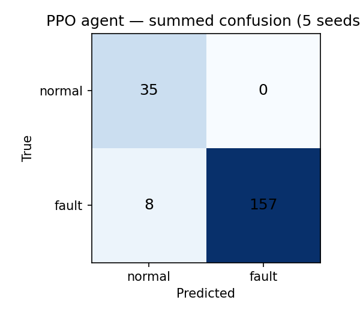
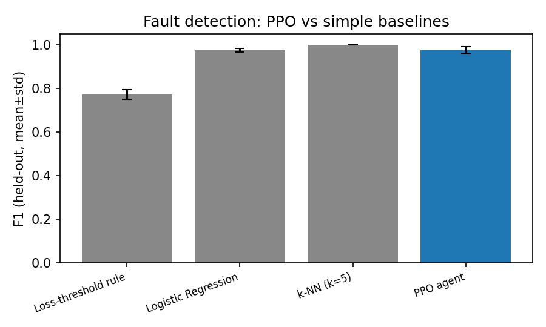

OFPFlowMod) so traffic keeps moving. The system is built on Mininet with Ryu and
Open vSwitch, and we evaluate each stage under leakage-free protocols rather than a single
favourable run. Fault detection reaches 0.94±0.01 accuracy and 0.96 F1 on held-out data, and
after a primary-link failure connectivity returns with no sustained loss: within a 40±13 ms
transient for event-driven detection, or bounded by the telemetry poll (3.4±0.6 s) when the
decision is taken from periodic state. Beyond a single recovery, we harden the loop into a
reusable framework and test three capabilities. First, localization: a hybrid of exact OpenFlow
port-status and telemetry pinpoints every injected hard fault (19 of 19) across two topologies
with no congestion false alarms. Second, path choice: a loss-aware objective (latency, capacity,
loss, hops) beats loss-blind recovery in three of five live scenarios, matches a strong
load-aware widest-path router on bandwidth faults, and outperforms it when loss and bandwidth
disagree, while staying robust to noisy loss telemetry against a ground-truth oracle. Third,
adaptation through reinforcement learning: on a drifting network where the decisive signal is not
visible at decision time, the controller learns from the reward of each executed recovery and
re-fits its path-selection policy online, which keeps recovery quality high while a frozen model
collapses (p = 0.0039 over eight seeds) and tracks the drift as well as a purpose-built adaptive
baseline. A clear boundary emerges for where learning belongs: a lightweight classifier handles
the stateless detection trigger, while reinforcement learning from execution rewards drives the
sequential recovery policy. We release the controllers, topologies, fault-injection harness, and
evaluation scripts.
Keywords: Software-Defined Networking, OpenFlow, self-healing, fault detection, fault localization, flow rerouting, path selection, reinforcement learning, online learning, Ryu, Mininet.
High availability is a basic expectation for modern networks, but a centralized SDN control plane concentrates the consequences of link and path failures in one place. Static backup routes and manual reconfiguration are often too slow or too rigid for conditions that change during operation. The question we study is whether a controller can carry out the whole recovery process on its own: notice a fault, work out where it is, choose a good path around it, reprogram the switches, and improve its choices as the network changes.
We build such a controller and evaluate it without the shortcuts that tend to inflate this kind of result. On a redundant emulated topology it detects link faults with 0.94 held-out accuracy and restores connectivity within a bounded transient of about 40 ms when detection is event-driven. We are careful about where learning belongs. Deciding that a fault has occurred is a stateless test, and a controlled comparison shows a lightweight classifier handles it as well as a learned agent, so we keep that stage simple. Recovering from the fault is different: the controller has to choose a path, act, observe the result, and do better next time as conditions drift, which is a sequential decision problem. We formulate that stage as reinforcement learning from execution rewards, and it is the part that adapts day by day. We then extend the loop from a single scripted recovery into a framework and test it on the harder problems that appear once more than one fault, one path, or one operating regime is in play.
Contributions: (1) a closed-loop self-healing controller that turns telemetry-based fault decisions into real OpenFlow flow modifications; (2) a leakage-free evaluation with a baseline comparison that shows where learning is and is not needed; (3) a recovery-mechanism baseline against OpenFlow fast-failover; (4) a hybrid fault-localization method; (5) a loss-aware resolver benchmarked against loss-blind recovery, a load-aware widest-path router, and a ground-truth oracle; (6) an online reinforcement-learning rule for that resolver, tested under drift with a paired permutation test over eight seeds; and (7) a single live run that composes all stages.
Learning-based control has been studied across SDN congestion management and network fault recovery: multi-agent classifier + deep-Q for congestion, DDPG for faulty-link weight recomputation, ML classifiers for intrusion recovery, platform-level control-plane self-healing, RL life-cycles for Open RAN, and (deep) RL for power-grid restoration. Two gaps shape our work. First, most SDN studies stop at a single decision and check it in simulation, without integrating detection, path selection, and adaptation into one loop that actually reprograms the data plane. We close that loop end-to-end on emulated OpenFlow. Second, several methods are labelled reinforcement learning even though each decision is taken from an independent observation. We are explicit that detection is contextual classification and the online stage is a non-stationary bandit, and we benchmark each against the right baseline.
The controller runs as a Ryu application over an Open vSwitch data plane (OpenFlow 1.3), emulated in Mininet. The decision logic is kept separate from the Ryu event handlers so it can be tested off the data plane, and the recovery loop is exposed as four cooperating stages: detection, localization, resolution, and learning (Fig. 1).
OFPFlowModEach polling interval, byte counters become throughput:
Throughput, packet loss, and a latency proxy are scaled to [0,1] so no single feature dominates. A complete loss of throughput on an active port is read as a link-down condition. Fig. 2 shows a representative trace.

The decision unit maps the state to keep-or-reroute. On a reroute it builds the topology graph with the failed element removed, lists candidates with a k-shortest-paths search, and scores each with a scale-free objective:
each term min–max normalized across candidates; fixed recovery weights w = [0.5, 1.0, 1.5, 0.1].
The best path is compiled to per-switch OFPFlowMod rules and installed fail-secure. Each
recovery's outcome (throughput, remaining loss, time) becomes a reward
r = β·throughput − α·loss − trec; a learner periodically re-fits the weights from recent
experience, accepting an update only if a held-out correlation does not fall.
The data plane is emulated in Mininet with Open vSwitch and OpenFlow 1.3; the control plane is Ryu in a Python virtual environment. The base topology carries a redundant link (a two-hop primary and a direct backup). Framework-level studies use a seven-switch mesh with three node-disjoint paths of distinct bandwidth and delay, plus a second topology for the localization generalization test.
Stratified 70/30 split before any oversampling; oversampling on the training split only; five seeds. No false alarm on the held-out normal class.
| Metric | Value |
|---|---|
| Accuracy | 0.940 ± 0.012 |
| Precision | 1.000 ± 0.000 |
| Recall | 0.927 ± 0.015 |
| F1 | 0.962 ± 0.008 |

On identical splits, both lightweight classifiers do better than the RL agent, so detection quality does not come from learning.
| Method | Acc. | Prec. | Rec. | F1 |
|---|---|---|---|---|
| Loss-threshold rule | 0.695 | 1.000 | 0.630 | 0.773 |
| Logistic regression | 0.960 | 1.000 | 0.952 | 0.975 |
| k-NN (k=5) | 1.000 | 1.000 | 1.000 | 1.000 |
| PPO agent | 0.940 | 1.000 | 0.927 | 0.962 |

After failing the primary link, connectivity is restored with no sustained loss. Recovery time differs only by the telemetry cadence, not the flow install.
| Variant | Recovery time | Bounded by |
|---|---|---|
| Event-driven (port-status) | 40 ± 13 ms | OF event → flow mod |
| PPO-driven (telemetry) | 3.4 ± 0.6 s | 3 s statistics poll |
Data-plane RTT: primary path 31.1 ms (3.5 ms jitter), backup 18.1 ms (1.4 ms jitter).
| Mechanism | Node fault | Single mid-link fault |
|---|---|---|
| Fast-failover (OFPGT_FF) | 52 ± 10 ms | no recovery |
| Controller reroute (ours) | 40 ± 13 ms | 40 ± 13 ms |
Per-switch fast-failover cannot recover a mid-link fault the near switch never sees; the global-view controller reroutes both endpoints in ~40 ms.
Telemetry alone cannot localize a fault (measured precision ≈ 0.10), so localization uses OpenFlow port-status. It pinpoints every hard fault across both topologies, generalizing to the unseen second topology by construction.
| Topology | Hard faults | Localized | Accuracy | Congestion FA |
|---|---|---|---|---|
| mesh | 10 | 10 | 1.000 | 0 |
| mesh2 | 9 | 9 | 1.000 | 0 |
| Overall | 19 | 19 | 1.000 | 0 |
We measure each survivor's live QoS, then map each strategy to its chosen path. Composite QoS = throughput − 0.05·latency − 0.2·loss.
| Scenario | fixed | short | widest | rand | resolver | oracle |
|---|---|---|---|---|---|---|
| congest_B | −0.1 | −0.1 | 12.7 | 4.3 | 12.7 | 12.7 |
| loss_B | −4.8 | −4.8 | 8.4 | 0.2 | 8.4 | 8.4 |
| congest_loss_B | −5.2 | −5.2 | 9.6 | 0.6 | 9.6 | 9.6 |
| congest_C_ctrl | 5.4 | 5.4 | 5.4 | −0.4 | 5.4 | 5.4 |
| loss_C_fat | 6.1 | 6.1 | −13.2 | −2.4 | 6.1 | 6.1 |
The resolver beats the loss-blind baselines in three of five scenarios, is never worse than widest-path, and clearly beats it in loss_C_fat (6.1±3.6 vs −13.2±4.5), where the loss sits on the high-capacity path. Matching the oracle here is a robustness check, not an optimality claim: the loss gaps (16–33 points) sit well outside the σ = 0.05 observation noise, so the noisy and true inputs rarely disagree.
A nine-day schedule drifts the degradation between survivors; the decisive signal (loss) is invisible at decision time, so the right path must be learned from rewards. Three agents share the day-0 policy: online (RL), frozen, and an adaptive sliding-window bandit.
| Day | online | frozen | adaptive | p(degrade B) |
|---|---|---|---|---|
| 0 | 10.2 | 13.0 | 8.4 | 0.90 |
| 2 | 8.7 | 11.3 | 9.1 | 0.70 |
| 4 | −1.6 | −1.7 | −1.7 | 0.50 |
| 6 | 1.3 | 0.3 | −0.5 | 0.30 |
| 7 | 3.1 | −9.1 | 1.0 | 0.20 |
| 8 | 4.8 | −11.0 | 6.7 | 0.10 |
The frozen model falls from 13.0 to −11.0; the online learner exceeds it in the late regime with p = 0.0039, shows no net forgetting, and matches the adaptive baseline (4.0 vs 3.8; p = 0.547).
All stages run in one live process over a drifting five-day schedule with twenty faults.
| Outcome | Result |
|---|---|
| Faults detected (port-status, ~0.25 s) | 20/20 |
| Valid recovery path installed | 20/20 |
| Full reachability on a healthy-survivor choice | 15/15 |
| Reachability overall | 19/20 |
| Accepted learner updates | 3 |
| Resolver preference (day 0 → final) | C → B |
Reinforcement learning drives how the controller adapts its recovery policy, but it is not the right tool for every stage. Detection is a stateless test: a classifier matches or beats the PPO agent and avoids its poll-bound latency, so we keep it simple. Recovery is sequential: the controller acts, observes a reward, and improves as the network drifts, which is where reinforcement learning pays off.
Detection is classification, not sequential control, and the dataset is small and near-separable (zero-throughput labeling inflates scores). The path-selection and learning studies use two survivors after a single failure, and the learning stage is a two-arm non-stationary bandit; larger multi-path topologies are the main generalization threat. The learning curve is trace-driven from live-measured QoS anchors, so a fully live multi-day loop remains future work. We use exact paired sign-flip permutation tests; eight seeds give a comfortable margin under 0.05. A single theme connects the results: learning helps where the decision is sequential and the world is partially observed, while a simple method suffices for the stateless trigger.
We presented a self-healing SDN controller that recovers from link failures by reprogramming the data plane, extended into a framework that localizes faults, selects recovery paths against honest baselines, and adapts its policy as the network drifts. It localizes every injected hard fault, restores connectivity within a bounded transient, chooses paths at least as well as a strong load-aware baseline and better when loss and bandwidth disagree, and keeps recovery quality high where a frozen model collapses. A simple method suffices for the stateless detection trigger, while reinforcement learning from execution rewards lets the recovery policy adapt as the network changes. Future work includes a genuinely sequential formulation, larger multi-path and multi-fault topologies, gray-failure detection, a fully live multi-day learning loop, and larger, less separable datasets.
Every quantitative value above is reproduced from a result
file in docs/ and results/tables/. See REPRODUCE.md for exact
commands and docs/TEAM_GUIDE.md for a file-by-file walkthrough.